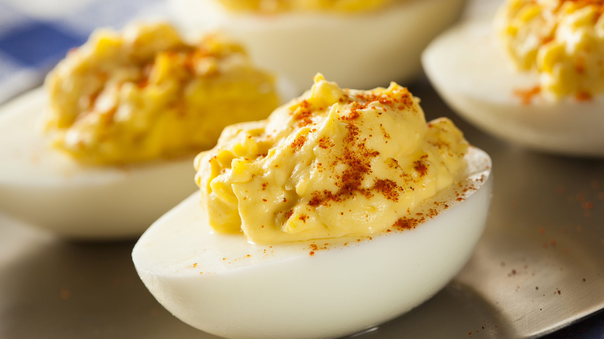

Deviled Eggs

Description
Good for any occasion, these eggs will keep your spirits high and your appetite sated like no other.
Ingredients
- 6 eggs
- 2 tablespoons mayonnaise
- 1 teaspoon white vinegar
- 1/8 teaspoon salt
- 1 teaspoon yellow mustard
- 1 pinch paprika, or to taste
Steps
- Place eggs on a saucepan and cover with water until they are fully submerged. Heat on high until the water boils, then cover.
- Change heat to low and cook for 60 seconds. Remove from heat and leave covered for 14 minutes and then rinse under cold water for 60 seconds.
- Crack the eggs and peel them. Slice them in half and place the yolks into a medium-sized bowl while the egg whites go onto a plate or platter.
- Mash the yolks into a crumble and add the mustard, salt, vinegar, and mayonnaise to it.
- Pour the milk and egg mixture into the bowl with the flour mixture and then mix them.
- Distribute the yolk mixture evenly into the egg whites. Season with as much paprika as you like.
- Enjoy!